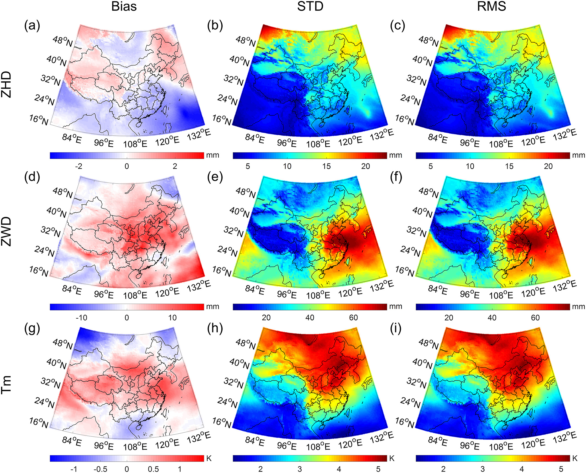
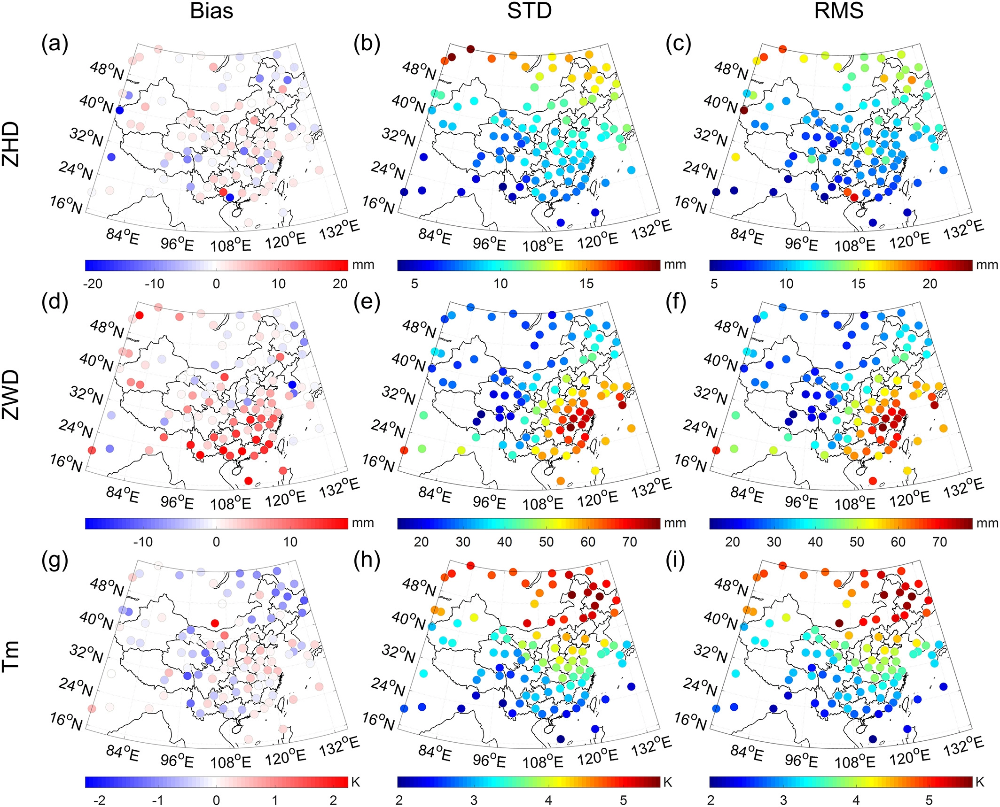

Research
Global Tropospherc Empirical Model - GTrop
Paper CodePrecise modeling of tropospheric delay and weighted mean temperature (Tm) is critical for Global Navigation Satellite System (GNSS) positioning and meteorology. However, the model data in previous models cover a limited time span, which limits the accuracy of these models. Besides, the vertical variations of tropospheric delay and Tm are not perfectly modeled in previous studies, which affects the performance of height corrections. In this study, we used the European Centre for Medium-Range Weather Forecasts (ECMWF) ERA-Interim reanalysis from 1979 to 2017 to build a new empirical model. We first carefully modeled the lapse rates of tropospheric delay and Tm. Then we considered the temporal variations by linear trends, annual, and semi-annual variations and the spatial variations by grids. This new model can provide zenith hydrostatic delay (ZHD), zenith wet delay (ZWD), and Tm worldwide with a spatial resolution of 1° × 1°. We used the ECMWF ERA-Interim data and the radiosonde data in 2018 to validate this new model in comparison with the canonical GPT2w model. The results show that the new model has higher accuracies than the GPT2w model in all parameters. Particularly, this new model largely improves the accuracy in estimating ZHD and Tm at high-altitude (relative to the grid point height) regions.

Global biases of the ZHD (a-b), ZWD (c-d), and Tm (e-f) for the GPT2w and GTrop models validated by ECMWF ERA-Interim monthly 1° × 1° data in 2018. The positive bias means the model output are larger than the reference values, while the negative bias means they are smaller than the reference values.
Global RMS of the ZHD (a-b), ZWD (c-d), and Tm (e-f) for the GPT2w and GTrop models validated by ECMWF ERA-Interim monthly 1° × 1° data in 2018
Biases of the ZHD (a-b), ZWD (c-d), and Tm (e-f) for the GPT2w and GTrop models validated by radiosonde data in 2018. The positive bias means the model output are larger than the reference values, while the negative bias means they are smaller than the reference values.
RMS of the ZHD (a-b), ZWD (c-d), and Tm (e-f) for the GPT2w and GTrop models validated by radiosonde data in 2018.
Validation results of GPT2w and GTrop models tested by ECMWF ERA-Interim data and radiosonde data in 2018.
| Validation Data |
Model |
ZHD |
ZWD |
Tm |
| Bias (mm) |
RMS (mm) |
Bias (mm) |
RMS(mm) |
Bias (K) |
RMS (K) |
| ECMWF Data |
GPT2w |
5.8 |
10.8 |
0.4 |
10.5 |
4.8 |
7.0 |
| GTrop |
1.0 |
6.5 |
1.3 |
9.6 |
-0.1 |
1.5 |
| Radiosonde Data |
GPT2w |
2.0 |
13.5 |
-2.3 |
33.5 |
5.4 |
8.5 |
| GTrop |
-0.9 |
12.3 |
-0.4 |
33.1 |
0.2 |
4.0 |
Chinese Tropospherc Empirical Model with Imporved SpatioTemporal Resolution - CTrop
Paper CodeTropospheric delay is an important error source in Global Navigation Satellite System (GNSS) positioning and can also be used in water vapor monitoring. Many models have been built to correct tropospheric delays or to convert zenith wet delays to precipitable water vapor. However, these models suffer from limited resolutions (spatial resolution lower than 1° and temporal resolution lower than 6 hr), which affects their performance. The release of European Centre for Medium‐Range Weather Forecasts ReAnalysis 5 (ERA5) provides the opportunity to lift this limit. In this study, we use the ERA5 hourly 0.5° × 0.5° data to build a new model over China, which integrates tropospheric delay correction for GNSS positioning and weighted mean temperature calculation for GNSS meteorology. By modeling the diurnal variations of zenith hydrostatic delay, zenith wet delay, and weighted mean temperature and the seasonal variations in their lapse rates, this model has the state‐of‐the‐art spatial resolution of 0.5° × 0.5° and temporal resolution of 1 hr. We validate this new model by the ERA5 data, the radiosonde data, and the GNSS data in comparison with the canonical GPT2w model. The results show that the new model has better accuracies in terms of root‐mean‐square than the GPT2w model in all parameters. Especially, the new model well captures the diurnal variations in tropospheric delay and weighted mean temperature. This new model provides accurate tropospheric delays and weighted mean temperature simultaneously, which enables GNSS receivers to measure precipitable water vapor directly and also benefits GNSS positioning.

(a, d, g) Bias, (b, e, h) STD, and (c, f, i) RMS of ZHD, ZWD, and Tm from CTrop model validated by ERA5 hourly 0.5° × 0.5° data in 2018. STD = standard deviation; ZHD = zenith hydrostatic delay; ZWD = zenith wet delay.

(a, d, g) Bias, (b, e, h) STD, and (c, f, i) RMS of ZHD, ZWD, and Tm from CTrop model validated by radiosonde data in 2017. STD = standard deviation; RMS = root‐mean‐square; ZHD = zenith hydrostatic delay; ZWD = zenith wet delay.
Validation Results of GPT2w, CTrop_LF, and CTrop Models Tested by ERA5 and Radiosonde Data.
| Validation Data |
Model |
ZHD (mm) |
ZWD (mm) |
Tm (K) |
| Bias |
STD |
RMS |
Bias |
STD |
RMS |
Bias |
STD |
RMS |
| ERA5 Data |
GPT2w |
-0.6 |
9.6 |
9.7 |
4.0 |
38.0 |
38.6 |
0.1 |
3.4 |
3.8 |
| CTrop_LF |
-0.2 |
9.6 |
9.6 |
2.7 |
37.4 |
37.8 |
0.1 |
3.4 |
3.4 |
| CTrop |
-0.2 |
9.3 |
9.4 |
2.7 |
37.3 |
37.7 |
0.1 |
3.3 |
3.4 |
| Radiosonde Data |
GPT2w |
-0.6 |
10.0 |
11.1 |
5.4 |
43.4 |
44.7 |
1.0 |
3.8 |
4.1 |
| CTrop_LF |
-0.6 |
10.0 |
11.1 |
3.7 |
43.0 |
43.8 |
-0.1 |
3.8 |
3.8 |
| CTrop |
-0.6 |
9.8 |
10.9 |
4.0 |
43.0 |
43.8 |
-0.1 |
3.7 |
3.7 |